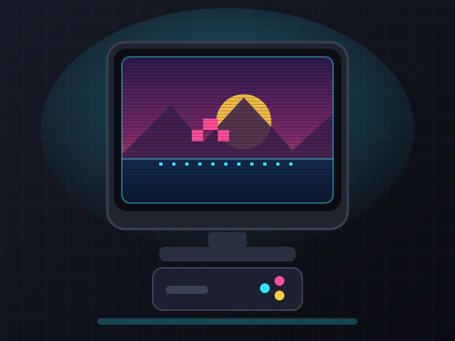

Terminal de arhivă 01 / expoziție online
Un muzeu pentru jocurile care ne-au crescut.
Retrocadia păstrează mașinile, formatele și micile ritualuri care au făcut jocul digital să se simtă magical. Intră în arhivă și navighează hardware-ul din spatele amintirilor.
- 6Sisteme în expoziție
- 4Erori mapate
- 1983Unde începe jurnalul

Erorile, înregistrate
Puncte de control într-un arcade de living.
- 1983 / ResetulHardware-ul casnic dedicat găseşte actul său al doilea, tranzactie de neobție pentru un nou fel de ritual de vecinătate.
- 1990 / Strălucirea 16 bițiCuloarea, sunetul și designul personajului devin destul de audacios pentru a trăi în memorie mult după ce butonul de alimentare face clic.
- 1994 / Poligonul sosgeMedia optică deschide ușa către lume cinematice, experimente de mișcare plină și un nou vocabular al jocului 3D.
- 2000 / Camera rețeleiJocul online începe să deplaceze centrul social al gaming-ului de pe un divan spre o lume întreagă conectată.
Planează o vizită
Adu o amintire; lasă o înregistrare.
Arhiva crește prin oamenii care au fost acolo. Adaugă un joc, o mașină sau o poveste, și arhivistii voluntari o vor lua în considerare pentru o expoziție viitoare.